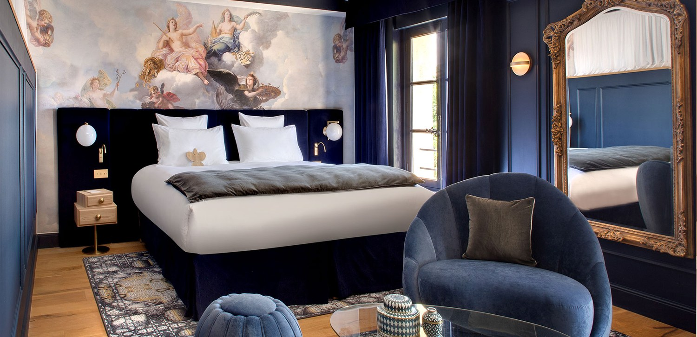
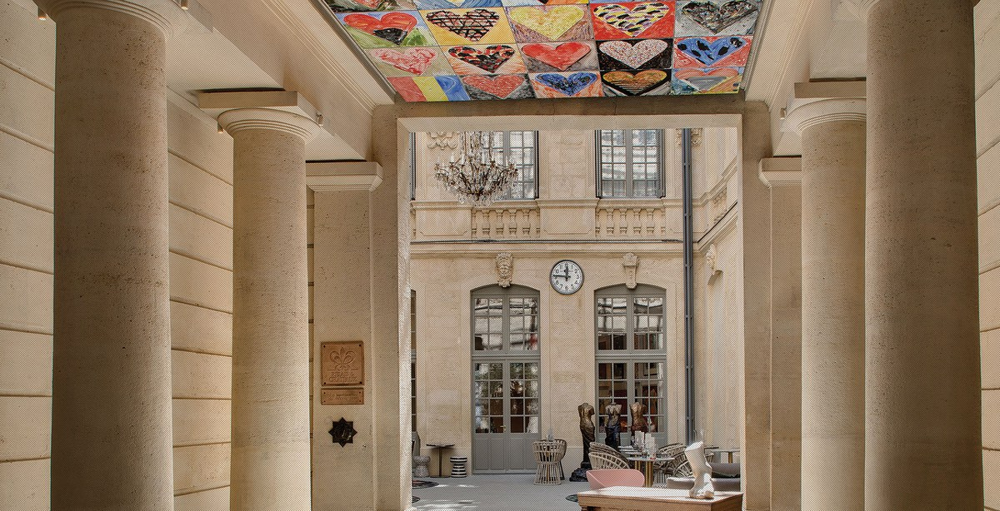
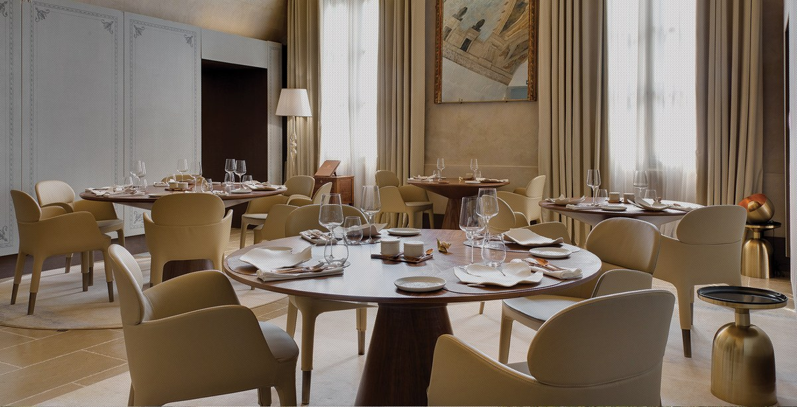

Meilleurs hôtels à Montpellier : 9 adresses classées en 2026
Deux 5 étoiles Relais & Châteaux, six tables étoilées en ville dont une seule en hôtel, et un écart de tarif de un à
cinq entre la première et la dernière adresse de ce classement.
Par Swann Bertaud, rédacteur hôtellerie de luxe✺Publié le 28 août 2026✺15 min de lecture

Une chambre du Richer de Belleval, sous les peintures d'origine de l'hôtel
particulier. Photo : site officiel de l'établissement.
L'essentielTrois adresses, trois logiques de séjour
Hôtel Richer de Belleval, 9,1/10 : le seul 5 étoiles Relais &
Châteaux du centre ancien, vingt chambres sous plafonds peints, et la seule table
étoilée logée dans un hôtel de Montpellier.
Domaine de Verchant, 8,9/10 : 5 étoiles Relais & Châteaux à
Castelnau-le-Lez, quarante hectares de vignes et le plus grand spa de
l'agglomération.
Pullman La Pléiade, 8,5/10 : la meilleure adresse du centre pour qui veut
des équipements complets, rénovée en 2023, deux piscines et un rooftop.
Montpellier a longtemps souffert d'une hôtellerie de congrès, dictée par le Corum et par les
facultés. Cela a changé, et pas seulement au sommet : la ville compte désormais deux maisons
Relais & Châteaux, dont une en plein écusson. Nous classons neuf adresses par le
Score LMHS sur 10 et l'Indice Méditerranée sur 5, notre
indice thématique pour cette page.
Notre sélection : les 9 meilleurs hôtels de Montpellier
01

Hôtel Richer de Belleval, le seul hôtel de la ville à table étoilée 9,1/10
Place de la Canourgue, 34000 Montpellier · 5 étoiles · Relais & Châteaux · Indice Méditerranée 4,6/5
Un hôtel particulier du XVIIe siècle sur la plus belle place de l'écusson, converti en vingt chambres seulement. C'est peu, et c'est le sujet : la maison a préféré la densité à la capacité. Les plafonds peints d'origine ont été restaurés et cohabitent avec un mobilier contemporain, chaque étage suivant sa propre gamme de couleurs. La maison abrite une fondation d'art contemporain, ce qui est rare dans un hôtel de cette taille et n'a rien d'un argument marketing : c'est un vrai lieu d'exposition. Surtout, elle héberge Le Jardin des Sens, étoilé au Guide MICHELIN, sous la direction des frères Jacques et Laurent Pourcel : sur les six tables étoilées que compte Montpellier en 2026, c'est la seule installée dans un hôtel. Le bémol : vingt clés, aucune piscine, aucun spa, et une place animée le soir. Pour les amateurs d'architecture et de gastronomie, pas pour un séjour bien-être.
20 chambres · Le Jardin des Sens, 1 étoile MICHELIN · Fondation d'art contemporain · Hôtel particulier du XVIIe ·
Site officiel →
02
Domaine de Verchant, quarante hectares de vignes 8,9/10
Castelnau-le-Lez, à dix minutes du centre · 5 étoiles · Relais & Châteaux · Indice Méditerranée 4,8/5
À partir de 320 €/nuit en basse saison, tarif relevé pour notre palmarès national.
Un manoir du XVIe siècle posé au milieu de quarante hectares de vignes, à la lisière de l'agglomération. C'est le meilleur Indice Méditerranée de ce classement, et de loin : ici le vignoble n'est pas un décor, il entoure le bâtiment. Le spa dépasse 2 100 m², ce qui en fait de très loin le plus vaste de la région montpelliéraine, avec des programmes de plusieurs jours et un club de remise en forme. La maison figure au 23e rang de notre palmarès national des hôtels et spas de France, avec 15,1/20. Le bémol : dix minutes de voiture séparent le domaine du centre ancien, et les tarifs placent l'adresse hors de portée d'un simple week-end urbain. Pour les séjours bien-être et les amateurs de vin.
Spa de plus de 2 100 m² · 40 hectares de vignes · Manoir du XVIe · 23e de notre palmarès national ·
Site officiel →
03

Pullman La Pléiade, le centre-ville avec tous les équipements 8,5/10
La maison a été entièrement rénovée en 2023, ce qui la place devant les autres 4 étoiles du centre sur le seul critère du neuf. Elle compte 87 chambres et suites, un chiffre nettement plus modeste que ce qu'on lit souvent, et propose deux piscines, un spa, un restaurant et un bar en rooftop. C'est l'adresse du centre qui réunit le plus d'équipements sous un même toit, ce qui compte quand on voyage avec des enfants ou qu'on enchaîne les journées de travail. Le bémol : le registre reste celui d'un hôtel de chaîne haut de gamme, sans ancrage local particulier, d'où un Indice Méditerranée modeste. Pour les familles, les séjours d'affaires et qui veut une piscine sans quitter la ville.
87 chambres et suites · Rénové en 2023 · Deux piscines · Spa et rooftop ·
Site officiel →
04
Grand Hôtel du Midi, l'haussmannien face à la Comédie 8,3/10
Place de la Comédie, 34000 Montpellier · 4 étoiles · Indice Méditerranée 4,2/5
L'adresse historique de la place de la Comédie, dans un bâtiment haussmannien qui donne directement sur l'Opéra. C'est l'emplacement le plus central du classement, et il se paie en animation : la place ne se vide jamais vraiment. La maison joue la carte du décor coloré et du clin d'œil aux arts de la scène, plutôt que du classicisme feutré qu'on attendrait de la façade. Le bémol, et il compte sur un site comme le nôtre : pas de spa, pas de piscine. On vient ici pour être au centre de Montpellier, pas pour se reposer. Pour les séjours culturels, les week-ends courts et qui veut tout faire à pied.
Place de la Comédie · Bâtiment haussmannien · Face à l'Opéra · Sans spa ·
Site officiel →
05
Belaroïa, le spa à prix contenu face à la gare 8,2/10
Précision utile, parce que beaucoup de classements se trompent : la maison s'écrit Belaroïa, elle est classée 4 étoiles, appartient à la collection Golden Tulip et compte 102 chambres. Ce n'est donc pas le petit boutique-hôtel qu'on lui prête parfois. Son intérêt réel est ailleurs : elle propose un spa avec trois studios de massage, un sauna et un hammam à un niveau de tarif que les maisons du centre n'atteignent pas, dans un bâtiment contemporain planté face à la gare Saint-Roch. Le bémol : l'architecture est franchement urbaine, sans rien de méditerranéen, et le quartier de la gare n'est pas celui qu'on visite. Pour les séjours courts, les arrivées en train et qui cherche un spa sans y mettre le prix du centre ancien.
102 chambres · 4 étoiles, Golden Tulip · Spa, 3 studios, sauna et hammam · Face à la gare Saint-Roch ·
Site officiel →
06
Disini, la campagne à quinze minutes 8,1/10
Castries, à quinze minutes de Montpellier · 4 étoiles · Relais du Silence · Indice Méditerranée 4,4/5
À Castries, hors de l'agglomération, le Disini appartient à la collection Relais du Silence, ce qui annonce le programme : on y vient pour le calme. La maison réunit un spa et une piscine dans un cadre de garrigue, avec une architecture nettement plus contemporaine que ce que la campagne languedocienne propose d'ordinaire. C'est la meilleure alternative au Domaine de Verchant pour qui veut la nature sans le tarif d'un Relais & Châteaux. Le bémol : quinze minutes de voiture, obligatoirement, et une offre de restauration plus modeste que les maisons de tête. Pour les couples et les séjours bien-être à budget mesuré.
Relais du Silence · Spa et piscine · Cadre de garrigue · À 15 minutes du centre ·
Site officiel →
07
Crowne Plaza Corum, la logique du congrès 7,8/10
Face au Corum, 34000 Montpellier · 4 étoiles · Indice Méditerranée 3,2/5
Planté face au palais des congrès et à l'Opéra Berlioz, le Crowne Plaza assume ce qu'il est : une machine à accueillir des congrès. Cent quarante-six chambres et suites, une piscine extérieure, une salle de sport, des espaces de réunion modulables. Les prestations sont correctes et prévisibles, le rapport prestations-prix est le meilleur du classement pour qui n'a besoin que de dormir et de travailler. Le bémol tient en un mot : l'anonymat. Rien ici ne dit Montpellier, et c'est le plus faible Indice Méditerranée de la sélection après l'Oceania. Pour les déplacements professionnels et les congrès, pas pour un week-end.
146 chambres et suites · Piscine extérieure · Face au Corum · Espaces de réunion ·
Site officiel →
08
Hôtel de la Comédie, l'emplacement avant tout 7,6/10
Aux abords de la place de la Comédie, 34000 Montpellier · Indice Méditerranée 3,9/5
Une adresse de petite taille aux abords immédiats de la place de la Comédie, qui joue l'intimité plutôt que les équipements. Le décor est personnalisé, l'accueil direct, et l'on est à quelques pas du cœur battant de la ville. C'est un choix de bon sens pour un séjour court où l'hôtel n'est qu'un point de chute entre deux sorties. Le bémol : ni spa, ni piscine, ni restaurant, et l'animation nocturne de la place se fait entendre. Pour les séjours de deux nuits, les budgets tenus et qui veut dormir au centre exact de Montpellier.
Petite capacité · Aux abords de la place de la Comédie · Sans spa ni restaurant ·
Site officiel →
09
Oceania Le Métropole, la solution de gare 7,3/10
Près de la gare Saint-Roch, 34000 Montpellier · 3 étoiles · Indice Méditerranée 3,0/5
Nous le classons parce qu'il rend un vrai service, et nous le classons dernier parce qu'il ne prétend à rien d'autre. À deux pas de la gare Saint-Roch et du centre ancien, l'Oceania Le Métropole propose un hébergement 3 étoiles fonctionnel, à un tarif qui reste le plus bas de cette sélection. Ni spa, ni piscine, ni restaurant. Le bémol est le format même : c'est une adresse de passage, sans caractère, où l'hôtel n'est qu'un lit. Pour une nuit entre deux trains, un budget serré ou un séjour où l'on ne rentre que pour dormir.
3 étoiles · À deux pas de la gare Saint-Roch · Le tarif le plus bas du classement ·
Site officiel →
Tableau comparatif : hôtels de Montpellier 2026
Hôtel
Étoiles
Score LMHS
Indice Méditerranée
Table étoilée
Spa
Piscine
Secteur
Pour qui
Richer de Belleval
5
9,1/10
4,6/5
Le Jardin des Sens
Non
Non
Écusson
Architecture, table
Domaine de Verchant
5
8,9/10
4,8/5
Non
Plus de 2 100 m²
Oui
Castelnau-le-Lez
Bien-être, vin
Pullman La Pléiade
4
8,5/10
3,6/5
Non
Oui
Deux
Centre
Familles, affaires
Grand Hôtel du Midi
4
8,3/10
4,2/5
Non
Non
Non
Place de la Comédie
Culture, centre
Belaroïa
4
8,2/10
3,4/5
Non
3 studios
Non
Gare Saint-Roch
Spa, budget
Disini
4
8,1/10
4,4/5
Non
Oui
Oui
Castries
Calme, nature
Crowne Plaza Corum
4
7,8/10
3,2/5
Non
Non
Extérieure
Corum
Congrès, affaires
Hôtel de la Comédie
n. c.
7,6/10
3,9/5
Non
Non
Non
Comédie
Séjours courts
Oceania Le Métropole
3
7,3/10
3,0/5
Non
Non
Non
Gare Saint-Roch
Budget, transit
Classement par Score LMHS. Le tarif et le rang national du Domaine de
Verchant sont repris de notre
palmarès national. Autres
informations relevées le 28 août 2026 sur les sites officiels, auprès du Guide MICHELIN et de
l'office de tourisme de Montpellier.
Protocole LMHS : comment nous avons classé ces hôtels
L'Indice Méditerranée, noté sur 5, est un indice thématique propre à cette
page. Il synthétise cinq dimensions : ancrage dans le bâti languedocien,
rapport à la lumière et à l'extérieur, table et produits
régionaux, bien-être et échelle de la maison. Le
Score LMHS sur 10 évalue la globalité, réserves comprises, et relève de la
grille LMHS Destination.
Ce palmarès est documentaire. Nous n'avons pas effectué de séjour de
contrôle. Catégories, capacités, tables, distinctions et équipements ont été relevés le 28 août
2026 sur les sites officiels, auprès du Guide MICHELIN et de l'office de tourisme de
Montpellier. Aucun partenariat commercial, aucune affiliation.
Montpellier : ce qu'il faut savoir avant de réserver
Six tables étoilées, une seule à l'hôtel. C'est le fait le plus utile de
cette page. Montpellier compte six étoiles au Guide MICHELIN en 2026 :
Ébullition, Le Jardin des Sens, La Réserve Rimbaud, Leclère, Pastis et Reflet d'Obione. Une
seule de ces six tables est installée dans un hôtel, celle du Jardin des
Sens, au Richer de Belleval. Autrement dit, la gastronomie montpelliéraine est
brillante mais dissociée de l'hôtellerie : sauf à cette adresse, il faudra sortir dîner.
Choisir son secteur. L'écusson, le centre ancien, pour
tout faire à pied : Richer de Belleval, Grand Hôtel du Midi, Hôtel de la Comédie. Le
quartier de la gare Saint-Roch pour les arrivées en train et les tarifs
contenus : Belaroïa, Oceania. La périphérie pour le calme et le bien-être :
Verchant à Castelnau-le-Lez, Disini à Castries, tous deux en voiture.
Saisonnalité. Avril, mai, septembre et octobre offrent le meilleur
compromis. Juillet et août sont écrasants de chaleur en centre ancien, ce qui rend les adresses
à piscine nettement plus intéressantes qu'ailleurs. L'hiver reste doux et les tarifs baissent
sensiblement.
Selon nos relevés 2026, l'Hôtel Richer de Belleval obtient la meilleure
note, 9,1/10 : c'est le seul 5 étoiles Relais & Châteaux du
centre ancien, installé dans un hôtel particulier du XVIIe siècle place
de la Canourgue, et c'est le seul hôtel de la ville à abriter une table étoilée. Pour un
séjour bien-être, le Domaine de Verchant (8,9/10) lui est préférable.
Combien de restaurants étoilés à Montpellier ?
Six en 2026 : Ébullition, Le Jardin des Sens, La Réserve Rimbaud,
Leclère, Pastis et Reflet d'Obione. Une seule de ces six tables se trouve dans un hôtel,
Le Jardin des Sens des frères Jacques et Laurent Pourcel,
au Richer de Belleval. Les cinq autres sont des restaurants indépendants : aucune autre
adresse de ce classement ne propose de table distinguée.
Quel hôtel de Montpellier a le meilleur spa ?
Le Domaine de Verchant, sans concurrence : plus de 2 100
m², des programmes de plusieurs jours et un club de remise en forme, au milieu de
quarante hectares de vignes. Il faut compter dix minutes de voiture depuis le centre. En
ville, le Pullman La Pléiade propose un spa et deux piscines, et le
Belaroïa trois studios de massage avec sauna et hammam à un tarif plus
accessible. Le Disini, à Castries, est la bonne alternative campagne.
Faut-il loger dans l'écusson ou en périphérie ?
Dans l'écusson si vous venez visiter Montpellier : le Richer de
Belleval, le Grand Hôtel du Midi et l'Hôtel de la Comédie mettent tout à pied. En
périphérie si vous venez vous reposer : le Domaine de Verchant à
Castelnau-le-Lez et le Disini à Castries offrent l'espace, le calme et les piscines que le
centre ancien ne peut pas donner. Dans les deux cas de périphérie, la voiture est
nécessaire.
Le Belaroïa est-il un boutique-hôtel ?
Non, contrairement à ce qu'on lit souvent. Le Belaroïa,
qui s'écrit ainsi, est un 4 étoiles de 102 chambres rattaché à la
collection Golden Tulip, installé dans un bâtiment contemporain face à la gare Saint-Roch.
Son intérêt réel est son spa, trois studios de massage avec sauna et
hammam, proposé à un niveau de tarif que les maisons du centre ancien n'atteignent pas.
Quelle est la meilleure période pour réserver à Montpellier ?
Avril, mai, septembre et octobre. Juillet et août sont écrasants de
chaleur dans l'écusson, ce qui rend les adresses avec piscine bien plus intéressantes
qu'ailleurs : le Pullman et ses deux bassins, le Verchant, le Disini, le Crowne Plaza.
L'hiver reste doux à Montpellier et les tarifs baissent sensiblement.
Le mot de SwannUne ville qui vient de rattraper son hôtellerie
Montpellier a longtemps eu l'hôtellerie de ses congrès plutôt que de son patrimoine : beaucoup de chambres, peu de maisons. Le Richer de Belleval a changé cela, et il faut mesurer ce que représente un Relais et Châteaux de vingt clés dans un hôtel particulier du XVIIe, en plein écusson, avec une fondation d'art et la seule étoile de la ville. Une chose me frappe en établissant ce classement : Montpellier aligne six tables étoilées, mais une seule se trouve dans un hôtel. La ville a rattrapé son retard sur l'hébergement, et sa gastronomie n'a jamais eu de retard à rattraper ; les deux vivent simplement chacune de leur côté.
Swann Bertaud, rédacteur hôtellerie de luxe
Méthode et sources
9 hôtels de Montpellier et de son agglomération classés par le Score LMHS sur
10, issu de la grille LMHS Destination, et par l'Indice Méditerranée sur
5, indice thématique propre à cette page : ancrage dans le bâti languedocien,
rapport à la lumière et à l'extérieur, table et produits régionaux, bien-être, échelle de la
maison. Aucun séjour de contrôle n'a été effectué. Le tarif et le rang
national du Domaine de Verchant sont repris de notre
palmarès national, où la
maison occupe le 23e rang avec 15,1/20. Catégories, capacités, tables,
distinctions et équipements relevés le 28 août 2026 sur les sites officiels, auprès du Guide
MICHELIN et de l'office de tourisme de Montpellier. Aucun partenariat commercial, aucune
affiliation. Photographies : Hôtel Richer de Belleval, site officiel.
9 adressesIndice Méditerranée /5Sans séjour de contrôle0 partenariat